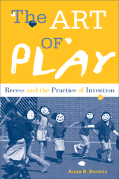

<body bgcolor="#FFFFFF" text="#000000" link="#0000FF" vlink="#CC0000" alink="#CC0000"><center><hr width="350" size="1" align="center" noshade>Play and recess seen from the eyes of children<hr width="350" size="1" align="center" noshade><p><a href="https://cdcshoppingcart.uchicago.edu/Cart/ChicagoBook.aspx?ISBN=9781439910931&&PRESS=temple" target="_top">Buy this book!</a> | <a href="https://cdcshoppingcart.uchicago.edu/Cart/Cart.aspx?PRESS=temple" target="_top">View Cart</a> | <a href="https://cdcshoppingcart.uchicago.edu/Cart/Cart.aspx?PRESS=temple" target="_top">Check Out</a></p><p></p></center><!--none//--><h1>The Art of Play</h1>
<H2>Recess and the Practice of Invention</H2>
<h3>Anna R. Beresin</h3>
<P>cloth 1-4399-1093-6 $90.50, Nov 13, <FONT COLOR=#990033>Available</FONT>
<br>paper 1-4399-1094-4 $26.95, Nov 13, <FONT COLOR=#990033>Available</FONT>
<br>Electronic Book 1-4399-1095-2 $26.95 <FONT COLOR=#990033>Available</FONT>
<BR> 202 pp
6x9
2&nbsp;tables 155&nbsp;figures 11&nbsp;halftones
</P><BLOCKQUOTE><I>"Thank you, Anna Beresin, for your graphic portrayal of what happens when we starve children of opportunities for play. Using children’s art as a lens to a world without recess, this book allows us to peer into the playgrounds of our impoverished schools. It helps us understand how we can spark all children’s creative potential with a piece of chalk, some balls, and a few jump ropes. Our leaders are quick to talk about the 25 percent of children growing up in poverty who are being left behind. Moving beyond talking about the problem to showing it, </I>The Art of Play<I> teaches us what we can and should do about it."</I><br>&#151<b>Kathy Hirsh-Pasek</b>, Professor of Psychology, Temple University, and coauthor of <I>Einstein Never Used Flashcards: How Our Children Really Learn—and Why They Need to Play More and Memorize Less</I></I></BLOCKQUOTE>
<P>What can the art of play teach us about the art of play? Showcasing the paintings of more than one hundred Philadelphia public elementary school children, folklorist Anna Beresin’s innovative book <i>The Art of Play</i>, presents images and stories that illustrate what children do at recess and how it makes them feel.
<P>Beresin provides a nuanced, child-centered discussion of the intersections of play, art, and learning. She describes a widespread institutionalized fear of play and expressive art and illustrates the transformative power of simple materials like chalk and paint. Featuring more than one hundred paintings and a dozen surreal photographs of masked children enjoying recess, <i>The Art of Play</i> weaves together the diverse voices of children and working artists with play scholarship.
<P>This book emerged from Recess Access, a service-learning project that donated chalk, ropes, balls, and hoops to under-resourced public schools in Philadelphia.
<BR>&nbsp;<h2>Excerpt</h2><P>Excerpt available at <a href="http://www.temple.edu/tempress">www.temple.edu/tempress</a></p>
<BR>&nbsp;<h2>Reviews</h2>
<p><I>"Beresin and her team observe and analyze the children's play, and their responses to the opportunities to play.... The results are both inspiring and disturbing.... The book also includes hundreds of children's ink drawings of their play experiences with Beresin's materials. The value of the opportunity for children to play with art supplies and have a chance to express themselves through art is clear through Beresin's accounts... The images add a playfulness to the text and provide another means of documenting the impact of schoolyard play on children.... </i>The Art of Play<i> makes a strong case for the power of play, in the most fundamental, simple ways, in the lives of children, for the children, for schools, and for society."</I><br>&#151<b><I>Teachers College Record</I></b>
<p><I>"Although the focus of this brief book is recess, it conveys much more, offering a strong argument for the importance of play and art in children's education.... The examples of the children's play and art, as well as citations from many advocates for play and the arts, strengthen the book. By describing her experiences with administrators, teacher, and students, Beresin provides a vivid picture of the challenges the educational system faces and some ways to meet those challenges. Summing Up: Highly recommended."</I><br>&#151<b><I>Choice</I></b>
<p><I>"[Beresin's] tone is playful and fun, not stereotypically academic, as she manages to integrate authoritative source material effectively with her descriptions of children playing four-square and hopscotch.... That being said, the book does not lack scholarly weight.... [A] wide-ranging network of scholarship calls attention to the interdisciplinary nature o the study of children's play.... One may regard Beresin's work as a cautionary tale.... However, </i<The Art of Play<i> is also a hopeful narrative setting forth the things those in power can do to encourage children to be active, playful, and creative."</I> <br>&#151<b><I>Western Folklore</I></b>
<BR>&nbsp;<h2>Contents</h2><P>
<p>Introduction</p>
<p><b>Part I: Erasing Children’s Expressivity</b>
<br>1. “We Don’t Have It”
<br>2. Before and After</p>
<p><b>Part II: Master Players</b>
<br>&nbsp; Interlude A
<br>3. Chalk
<br>&nbsp; Interlude B
<br>4. Ball
<br>&nbsp; Interlude C
<br>5. Rope
<br>&nbsp; Interlude D</p>
<p><b>Part III: Balancing Acts</b>
<br>6. “We Invented It”/“We Taught Them”
<br>7. The Paintlore of Children
<br>8. Art Advocacy/Play Advocacy
<br>Conclusion: The Practice of Invention</p>
<p>Acknowledgments
<br>Notes
<br>References
<br>Index</p>
</P><BR>&nbsp;<H2>About the Author(s)</H2>
<P><b>Anna R. Beresin</b> is Professor of Liberal Arts at The University of the Arts in Philadelphia, Director of Recess Access, and author of <i>Recess Battles: Playing, Fighting, and Storytelling</i>.</P>
<BR><H2>Subject Categories</H2>
<p><A HREF="/tempress/youth.html" TARGET="_top">Youth Studies</a>
<BR><A HREF="/tempress/philly.html" TARGET="_top">Philadelphia Region</a>
<BR><A HREF="/tempress/education.html" TARGET="_top">Education</a>
</p>
<p align="center"><a href="https://cdcshoppingcart.uchicago.edu/Cart/ChicagoBook.aspx?ISBN=9781439910931&&PRESS=temple" target="_top">Buy this book!</a> | <a href="https://cdcshoppingcart.uchicago.edu/Cart/Cart.aspx?PRESS=temple" target="_top">View Cart</a> | <a href="https://cdcshoppingcart.uchicago.edu/Cart/Cart.aspx?PRESS=temple" target="_top">Check Out</a></p><p><font face="Arial" size="1"><a href="copyright.html" onMouseOver="window.status='Web Copyright Policy';return true;" onMouseOut="window.status=''" title="Web Copyright Policy">&copy;</a> 2015 <a href="http://www.temple.edu" target="new" onMouseOver="window.status='Link to Temple University home page';return true;" onMouseOut="window.status=''" title="Link to Temple University home page">Temple University</a>. All Rights Reserved. http://www.temple.edu/tempress/titles/2261_reg.html</font></p>